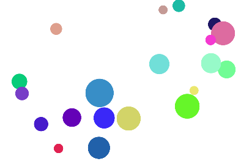

isPointInPath() 用来检测某个点是否在当前路径中,常用来做点击交互等。
需要注意的是，每次执行一次beginPath方法，检测路径就变成这次beginPath之后绘制的路径，原来的路径不参与检测。
例如实现点击下面的圆，颜色变成蓝色。

我们需要实现的是鼠标点击当前位置是否在我绘制的圆圈的路径内，而每个圆都是一个新的路径，而isPointPath检测的是当前的路径，也就是说我们需要在点击的过程中重新画圆的路径，每画一个圆就检测鼠标点击的点是否在当前的圆的路径中。-- 当点击鼠标时遍历小球的数组画圆，并检测点是否在当前路径上。
代码实现如下
var balls = [];
var canvas = document.getElementById('canvas');
canvas.onclick = function(e){
//获取基于画布的位置
var x = e.clientX - canvas.getBoundingClientRect().left; //getBoundingClientRect是获取元素相对于文档的位置
var y = e.clientY - canvas.getBoundingClientRect().top; //getBoundingClientRect是获取元素相对于文档的位置
for(var i = 0 ; i < balls.length; i++ ){
context.beginPath();
context.arc(balls[i].x, balls[i].y, balls[i].radius, Math.PI * 0, Math.PI * 2, 0);
if(context.isPointInPath(x, y)){
context.fillStyle='#058';
context.fill();
}
}
context.isPointInPath(x, y);
}
if (canvas.getContext) {
canvas.width = 1200;
canvas.height = 800;
var context = canvas.getContext('2d');
for (var i = 0; i < 20; i++) {
var radius = Math.random() * 50 + 20;
var R = Math.floor(Math.random() * 255);
var G = Math.floor(Math.random() * 255);
var B = Math.floor(Math.random() * 255);
var obj = {
radius: radius,
x: Math.random() * (canvas.width - 2 * radius) + radius,
y: Math.random() * (canvas.height - 2 * radius) + radius,
color: 'rgb(' + R + "," + G + "," + B + ')'
}
balls[i] = obj;
}
draw(context);
}
function draw(context) {
// context.clearRect(0, 0, canvas.width, canvas.height);
for (var i = 0; i < balls.length; i++) {
context.beginPath();
context.fillStyle = balls[i].color;
context.arc(balls[i].x, balls[i].y, balls[i].radius, Math.PI * 0, Math.PI * 2, 0);
context.closePath();
context.fill();
}
}
地方